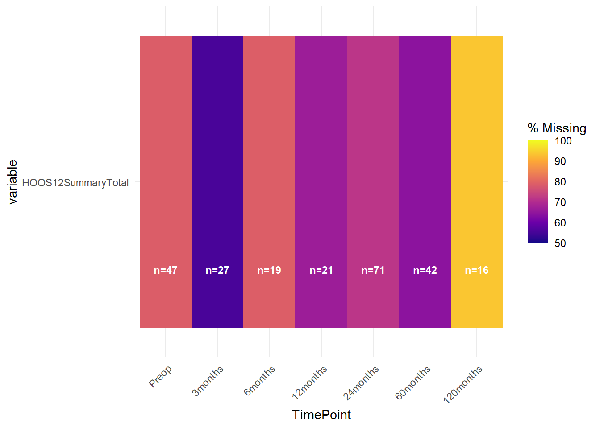

COMPRESSOR_Governance
1 Preamble
The following analysis is a report on the activity, quality and data contained in the COMPRESSOR registry, which is described in the registry wiki.
Analysis packages were loaded initially into the R environment.
Access to the COMPRESSOR datasets was pre-authorised.
A function was generated to retrieve files using the googledrive package, to call on later in the analysis for processing data imports.
Data was retrieved from live database tables. Source files were specified and stored as global variables to call on in further functions.
A static registry snapshot was retrieved and formatted based on the fixed date of preparation of the snapshot (30-Jun-2025).
2 Context
COMPRESSOR (Complex Reconstructive Surgery Outcomes Registry) is a clinical quality registry supporting the practices of one surgeon in Sydney, New South Wales. It has been in operation over two distinct periods, with upper and lower limb tumour cohorts, as well as tumour of the pelvis and reintervention arthroplasty cohorts of the hip and knee.
3 Recruitment Flow by Region
Flowcharts as per STROBE (Vandenbroucke et al. 2007) and RECORD (Benchimol et al. 2015) guidelines were generated for treatments enrolled into the Registry. Followup was set to eligibility at any postoperative timepoint.

Cumulative recruitment over time was plotted from Registry inception to the present.

4 Missingness and Compliance
4.1 Baseline
Missingness for 12month PROMs (represented by VR12, common to all cohorts) is captured in Figure 4.
Overall, there are variable response rates for scores across cohorts.
4.2 Patient-reported Outcomes by TimePoint



5 Cohort Analysis
The VR12 is a general health questionnaire that is presented to all patients enrolled in the registry.

Between-cohort variability is observed for the Physical Component Score of the VR12. Most notable is the high variation within all cohorts.

5.1 Tumour Pelvis
| Characteristic | Non-Surgical N = 361 |
Surgical N = 1211 |
|---|---|---|
| TreatmentType | ||
| Primary | 36 (100%) | 102 (84%) |
| Revision Else | 0 (0%) | 3 (2.5%) |
| Revision Own | 0 (0%) | 16 (13%) |
| TreatmentStatus | ||
| Failed | 0 (0%) | 23 (19%) |
| No further followup | 2 (5.6%) | 25 (21%) |
| Ongoing | 34 (94%) | 66 (55%) |
| Pending: IC | 0 (0%) | 1 (0.8%) |
| Pending: Treatment | 0 (0%) | 6 (5.0%) |
| DateInitialExamination | 2016-07-15 - 2025-06-20 | 2009-02-20 - 2025-07-14 |
| AgeAtInitialExam | 52 (36, 59) | 58 (38, 69) |
| AgeAtTreatment | 52 (36, 59) | 58 (38, 69) |
| AnalysisLabel | ||
| GMRS | 0 (0%) | 4 (4.1%) |
| Ossis | 0 (0%) | 8 (8.2%) |
| Ossis; GMRS | 0 (0%) | 1 (1.0%) |
| Retrospective; | 12 (43%) | 30 (31%) |
| Retrospective; | 16 (57%) | 12 (12%) |
| Retrospective; GMRS | 0 (0%) | 6 (6.2%) |
| Retrospective; GMRS - Planned | 0 (0%) | 2 (2.1%) |
| Retrospective; Ossis | 0 (0%) | 27 (28%) |
| Retrospective; Ossis; GMRS | 0 (0%) | 2 (2.1%) |
| Retrospective; Ossis; Sacrum | 0 (0%) | 2 (2.1%) |
| Retrospective; OssisPlan | 0 (0%) | 2 (2.1%) |
| Retrospective; Signature | 0 (0%) | 1 (1.0%) |
| Sex2 | ||
| Female | 21 (58%) | 60 (50%) |
| Male | 15 (42%) | 61 (50%) |
| 1 n (%); Min - Max; Median (Q1, Q3) | ||
| Characteristic | 1 Years | 2 Years | 5 Years | 10 Years |
|---|---|---|---|---|
| Procedure Survival | ||||
| Non-Surgical | 100% (100% - 100%) | 100% (100% - 100%) | 100% (100% - 100%) | 100% (100% - 100%) |
| Surgical | 93% (87% - 98%) | 84% (76% - 93%) | 68% (57% - 83%) | 47% (29% - 75%) |
5.2 Tumour Lower Limb
| Characteristic | Non-Surgical N = 731 |
Surgery recommended N = 11 |
Surgical N = 5201 |
|---|---|---|---|
| TreatmentType | |||
| Primary | 66 (90%) | 1 (100%) | 427 (82%) |
| Revision | 0 (0%) | 0 (0%) | 1 (0.2%) |
| Revision Else | 5 (6.8%) | 0 (0%) | 7 (1.3%) |
| Revision Own | 2 (2.7%) | 0 (0%) | 84 (16%) |
| TreatmentStatus | |||
| Failed | 4 (5.5%) | 0 (0%) | 109 (21%) |
| No further followup | 4 (5.5%) | 0 (0%) | 151 (29%) |
| Ongoing | 65 (89%) | 1 (100%) | 247 (48%) |
| Pending: Treatment | 0 (0%) | 0 (0%) | 13 (2.5%) |
| DateInitialExamination | 2015-11-02 - 2025-06-28 | 2023-02-01 - 2023-02-01 | 2004-12-22 - 2025-08-06 |
| AgeAtInitialExam | 50 (36, 57) | 74 (74, 74) | 51 (31, 65) |
| Sex2 | |||
| Female | 45 (62%) | 1 (100%) | 260 (50%) |
| Male | 28 (38%) | 0 (0%) | 260 (50%) |
| 1 n (%); Min - Max; Median (Q1, Q3) | |||

| Characteristic | 1 Years | 2 Years | 5 Years | 10 Years |
|---|---|---|---|---|
| Procedure Survival | ||||
| Primary | 91% (88% - 94%) | 86% (82% - 90%) | 74% (69% - 80%) | 66% (59% - 74%) |
| Revision Else | 100% (100% - 100%) | 100% (100% - 100%) | 100% (100% - 100%) | 100% (100% - 100%) |
| Revision Own | 79% (70% - 89%) | 62% (52% - 76%) | 54% (43% - 69%) | 28% (11% - 69%) |
6 Observations | Interpretation
7 Recommendations
Consider modifications to configuration of shoulder cohorts
Implement strategies to improve patient engagement at later followup timepoints
Identify supplementatl data linkage activities to improve outcomes (complications, mortality, procedure survival) at medium to long-term followup
References
Benchimol, Eric I., Liam Smeeth, Astrid Guttmann, Katie Harron, David Moher, Irene Petersen, Henrik T. Srensen, Erik von Elm, and Sinad M. Langan. 2015. The REporting of Studies Conducted Using Observational Routinely-Collected Health Data (RECORD) Statement. PLOS Medicine 12 (10): e1001885. https://doi.org/10.1371/journal.pmed.1001885.
Vandenbroucke, Jan P, Erik von Elm, Douglas G Altman, Peter C Gtzsche, Cynthia D Mulrow, Stuart J Pocock, Charles Poole, James J Schlesselman, and Matthias Egger. 2007. Strengthening the Reporting of Observational Studies in Epidemiology (STROBE): Explanation and Elaboration. PLoS Medicine 4 (10): e297. https://doi.org/10.1371/journal.pmed.0040297.